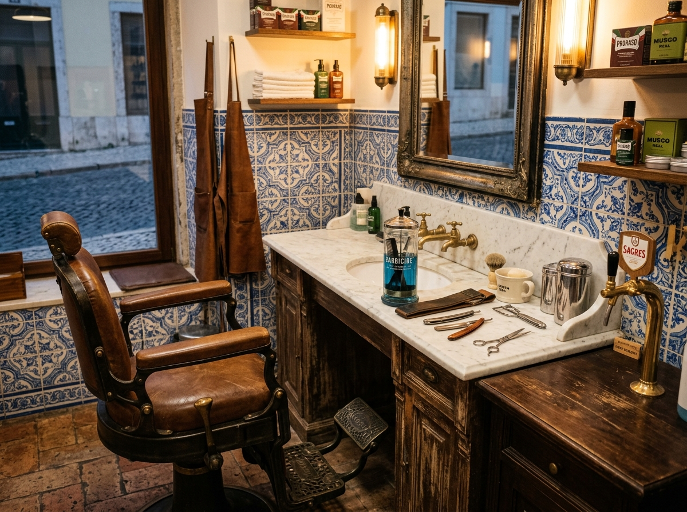
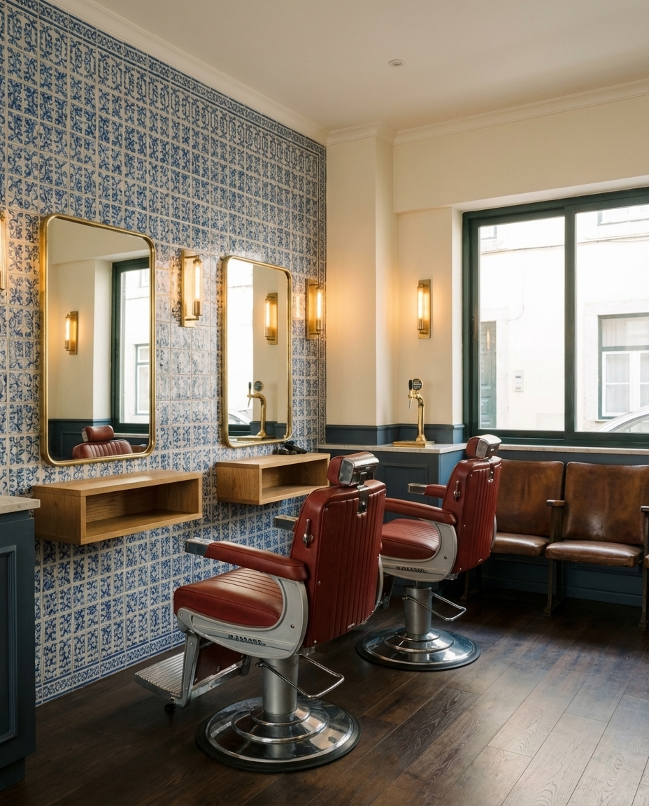
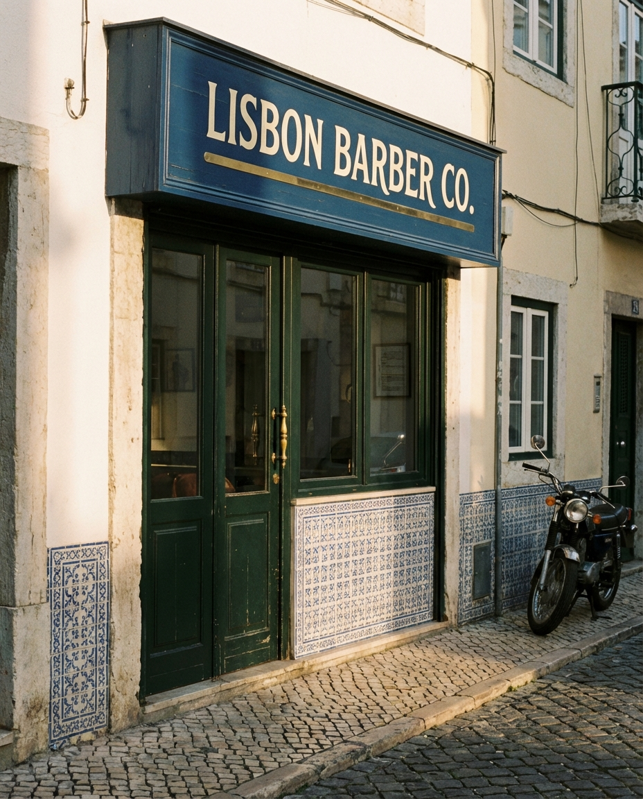
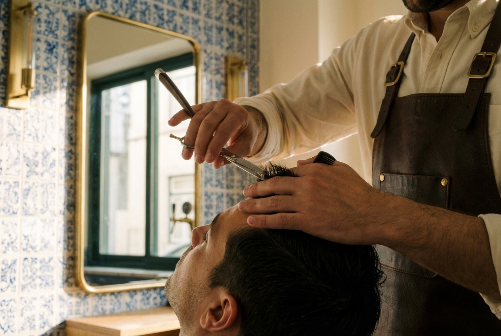
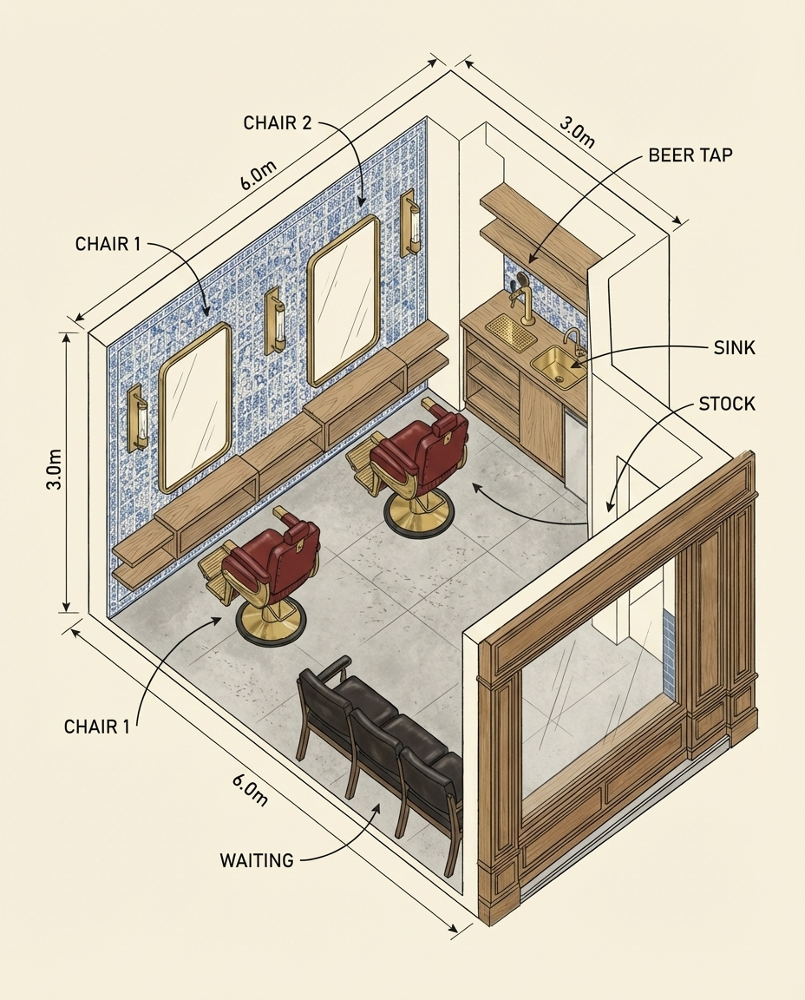
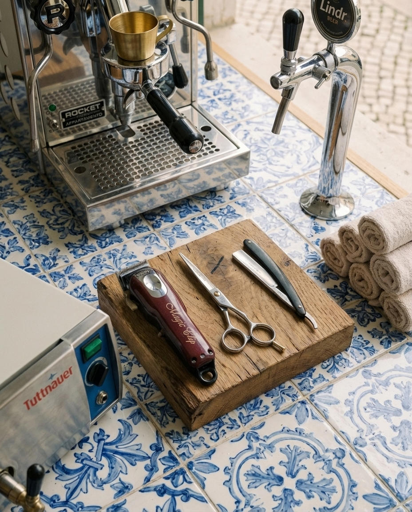
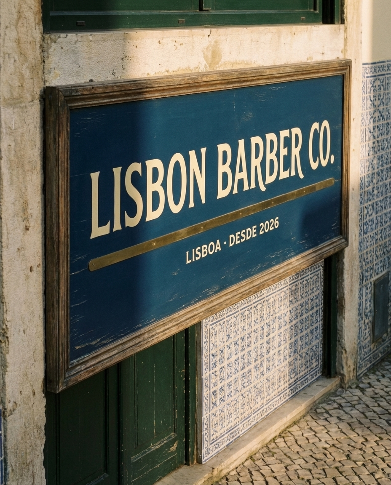
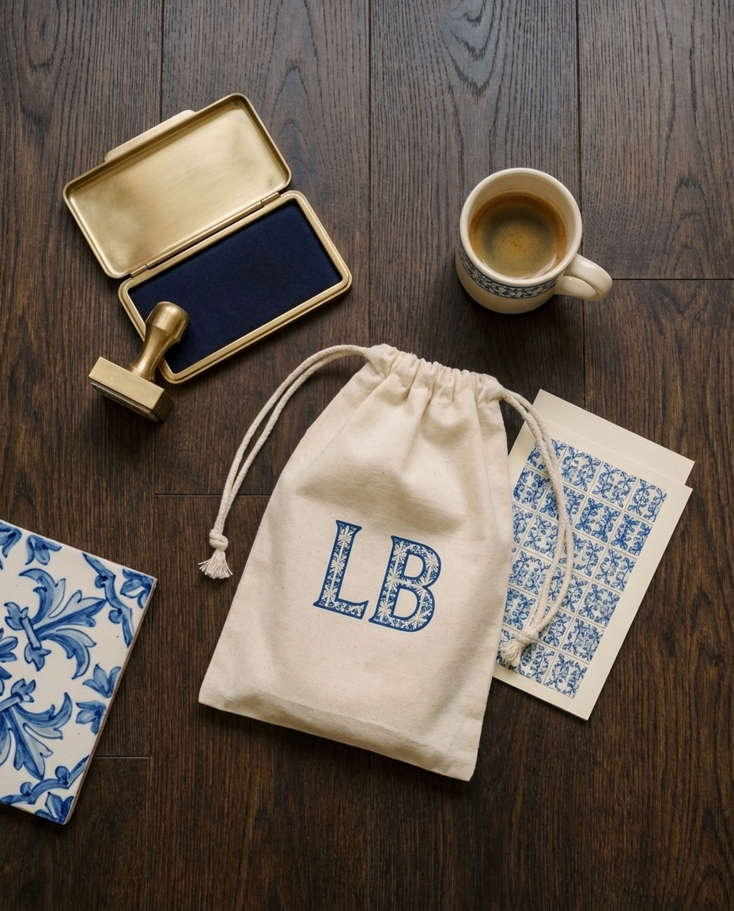
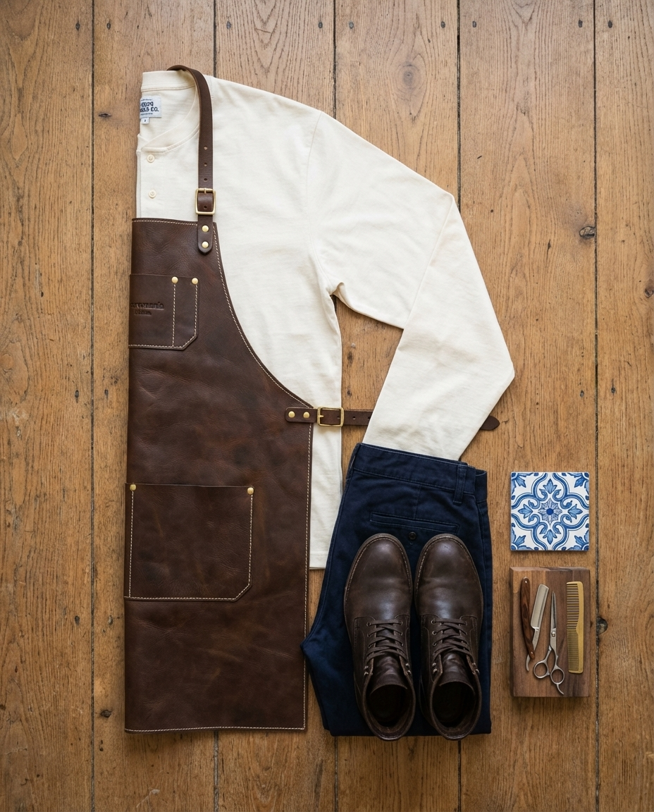
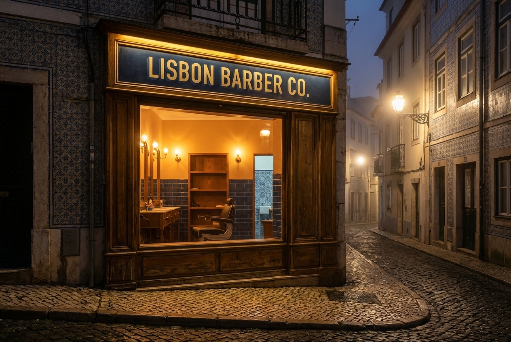

Lisbon Barber Co. is an 18 m² micro-barbershop in Alfama or Príncipe Real, pairing traditional Portuguese barbering craft with a single craft beer tap. Two chairs, two barbers, one drink. Every cut is a 45-minute ritual: coffee or Sagres Bohemia on arrival, hot towel, razor, espresso after.
The financial case rests on three pillars: (1) premium ticket €28 for haircut + beard + beer, 8% above Lisbon average; (2) 18 m² keeps rent under €950/month in secondary streets; (3) no-walkin booking discipline lifts utilisation to 72%.
A barbershop where the beer is as good as the cut, and the cut takes 45 minutes because that's how long a proper one should.
Lisbon's barbering scene split two ways after 2020: either €10 Turkish-style speed cuts or €45 hotel-grade salons for tourists. Locals aged 28–45 with disposable income have no middle tier. Lisbon Barber Co. occupies that gap — €28 ticket, 45-minute service, neighbourhood regulars.

00:00 Arrive, coffee or Sagres
00:05 Consultation + towel warming
00:10 Wash (if booked)
00:15 Cut begins
00:35 Hot towel + razor beard
00:42 Brass mirror check
00:45 Espresso + pay
Architect, designer, or product person earning €2,200–€4,500/month. Lives in Graça or Santos. Cuts every 4 weeks, spends €30–40 per visit. Books Friday afternoons before weekend plans.
~55% of revenue
Startup founder or agency lead in Príncipe Real. Cuts every 3 weeks. Willing to pay €45 for a 60-min slot with beard sculpting. Books early morning (08:00) before meetings.
~25% of revenue
Remote worker from DE/NL/UK, 2+ years in Lisbon, integrated into local networks. Cuts every 5 weeks. Values slow-craft, pays €28 without flinching. Brings visiting friends.
~20% of revenue
Tourists in Lisbon for 3 days (no trust, no loyalty). Men under 25 (different price point, different style). Anyone in a hurry — the 45-min ritual is the product, not a byproduct.
Three of the five (timer, beer, booking-only) are operational discipline choices that competitors cannot copy without rebuilding workflow. The other two (rotating tap, azulejo) are taste choices that competitors could copy but won't — the commitment feels excessive until it's proven.
The moat is coherence. Every choice reinforces every other choice. A Turkish barber adding craft beer doesn't become Lisbon Barber Co. — the time discipline, the booking-only model, the azulejo spend all have to come together.

For Lisbon locals who see their barbershop as a weekly ritual rather than an errand, Lisbon Barber Co. is the 45-minute booked-only craft-beer-serving neighbourhood chair that turns a haircut into a deliberate pause in the week.
Direct. "Your 16:00 on Friday is confirmed." Not "We would like to confirm your appointment for Friday at four o'clock in the afternoon."
Portuguese-first. Signage, WhatsApp, menu — Portuguese primary, English underneath.
No hype. Never "legendary", never "the best". The work is the marketing.
Warm, not cute. No mustache emojis, no "gentleman" language.
Legal: Lisbon Barber Co. Unipessoal Lda.
Brand: Lisbon Barber Co.
Short: LB · Lisboa
Handle: @lisbonbarberco
Azulejo · primary
Cream · surface
Brass · accent
Oak · warmth
Ink · type
Display · 300 / 400 / 600
Text · 300 / 400 / 500
H1 Fraunces 52px / 1.05
H2 Fraunces 32px / 1.15
H3 Inter 500 20px / 1.3
Body Inter 300 11px / 1.65
Label Inter 500 9px / 1.4 caps
Signature azulejo — applies to feature wall, business card back, WhatsApp avatar background

Natural light from the street-facing window at 15:00–16:30 when Lisbon sun is amber. Barber mid-cut, left shoulder to camera, client half-seen in the brass mirror. Beer glass on brass shelf, beads of condensation visible. No models — real regulars only.

| Item | Spec | Qty | Source | € |
|---|---|---|---|---|
| Barber chair | Takara Belmont Apollo II refurbished, red leather | 2 | Barbershop-Outlet.pt | 1,800 |
| Chair station mirror | Brass frame, 80×120cm, oak shelf | 2 | Feira da Ladra custom | 640 |
| Waiting bench | Oak + leather, 180cm, 3 seats | 1 | A Vida Portuguesa | 380 |
| Bar shelf (beer) | Brass + oak, 80×25cm | 1 | Local carpenter | 220 |
| Stock shelving | Oak, 80×200cm, 5 shelves | 1 | IKEA Ivar stained | 140 |
| Reception desk | None — iPad at chair 1 | — | — | 0 |
| Floor lamp | Brass tripod + cream shade | 2 | Vinçon | 180 |
| Hooks (clients) | Brass, 6-hook rack | 1 | Leroy Merlin | 45 |
| Furniture total | 3,405 |
Apollo II chairs are the single largest line item and the single most-defended choice — refurbished originals feel right, new Chinese copies do not.
Ambient. 2× IKEA Skurup pendant over waiting bench, 2700K LED, 60W equivalent. Warm, low, tavern-like.
Task. 2× Astro Fosso wall-mounted brass sconces beside each mirror, 3000K, 40W. Shadowless on the client's jaw.
Accent. Linear LED strip hidden above azulejo wall, 2200K, 10W/m, creates halo on the tile pattern.
Never cooler than 3000K anywhere in the shop. Lisbon sun is warm — matching it indoors keeps skin tones natural in mirror and on Instagram.
C1 · Ambient (pendant ×2)
C2 · Task L (sconce L + strip L)
C3 · Task R (sconce R + strip R)
C4 · Exterior sign (sunset timer)
C5 · Power (sockets, tap)
| Skurup pendants ×2 | 80 |
| Astro Fosso ×2 | 340 |
| LED strip 6m | 60 |
| Dimmer switches ×3 | 90 |
| Install labour | 180 |
| Total | 750 |
| Equipment | Model | Why this one | € |
|---|---|---|---|
| Clippers | Wahl Magic Clip Cordless ×2 | Industry standard, 90-min battery, silent | 320 |
| Trimmers | Wahl Detailer ×2 | Edge work, beard detailing | 180 |
| Shears | Kamisori Jewel 6" ×4 | Japanese-forged, 10-year edge | 560 |
| Razors | Dovo straight razor ×2 | Solingen steel, for shave service | 220 |
| Hot towel cabinet | Elite 8L | Silent, 75°C, 20-towel capacity | 140 |
| Autoclave | Tuttnauer 1730 Valueklave | Class B sterilisation, PT required | 1,850 |
| Beer tap | Lindr PYGMY 25 single | Countertop 25L/h, plug-in, serves 1 keg | 720 |
| Keg fridge | 20L cooler, hidden under bar | One 20L keg = 40 pints | 320 |
| Espresso machine | Rocket Appartamento | Italian, 1-group, fits 18 m² footprint | 1,400 |
| Grinder | Eureka Mignon Specialita | On-demand, 55mm burr | 480 |
| Equipment total | 6,190 |

Czech-made single-line countertop beer dispenser. 25 L/h output, 0.2 kW, plugs into standard PT socket. Serves one keg at a time — perfect for rotating monthly tap without complex line-cleaning rituals.
Clean cycle: 4 min weekly. Keg change: 90 seconds.
The single regulatory non-negotiable. Portuguese DGS (Direção-Geral da Saúde) requires Class B sterilisation for all barber tools. Tuttnauer 1730 is the smallest compliant unit — 17L chamber, 30-min full cycle, 10-year lifespan.
Skipping this closes the shop on day 1.
Italian prosumer, 1-group, E61 brew head. Small enough to fit under the mirror shelf, serious enough to make proper Lisbon espresso. The barber makes coffee in the 10-minute consultation window.
~6 espressos per hour at peak, no issue.
Japanese hand-forged in Seki City, convex edge, 6" length. Four pairs (two per barber, rotating). Sharpened every 6 months by local sharpener in Mouraria. Replacing them with cheaper shears is the fastest way to lose returning clients.
Edge life: 10 years with care.
Hand-painted wood panel above the door, 120×40cm. Dark azulejo blue ground, cream Fraunces "Lisbon Barber Co." letters, brass underline.
Window decal: simple "LB · LISBOA · 2026" in brass vinyl, bottom-right corner, 20cm wide.
No neon. No LED. No poles. A turning barber pole would pull the wrong audience.

9×5 cm cream card, azulejo pattern back, 10 cuts = 1 free. Hand-stamped with brass ink pad. No digital loyalty.
Print cost: €0.18 / card
Cream cotton drawstring, 15×20cm, Fraunces "LB" screen-printed. Given with every first cut — holds comb + pomade sample.
Cost: €2.40 / pouch
Ceramic espresso cup, cream glaze, azulejo trim. Served in-shop only — never takeaway, never branded disposables.
€4 / cup × 20 units
No t-shirts, no hoodies, no caps, no "barber culture" merch. The only thing that leaves the shop with a logo is the stamp card in the client's wallet. Merch dilutes. Discipline compounds.

Sourced from Couromania (Alfama workshop). Full-grain veg-tanned oak bark leather, 2.5mm thick, brass rivets, cream stitching. Two sets per barber (one in use, one drying).
Cost: €180 / apron × 4 = €720
The uniform is part of the 45-minute ritual — the apron going on marks the start, the apron coming off marks the end. A branded t-shirt would break the frame. The apron is the frame.

| Service | Duration | Price | Includes |
|---|---|---|---|
| The Lisbon Cut | 45 min | €28 | Cut + beer or espresso |
| The Lisbon Ritual | 60 min | €45 | Cut + hot towel shave + beer |
| The Beard | 30 min | €18 | Beard shape + hot towel |
| The Straight Razor | 40 min | €25 | Full razor shave + beer |
| Father & Son | 75 min | €45 | 2 cuts, 1 beer, 1 espresso |
| Stamp card · 10th cut | — | Free | Cut of your choice |
JAN · Dois Corvos Matiné
FEB · Musa Mick Jagger Lager
MAR · Oitava Colina Tramontana
APR · Dois Corvos Finisterra
MAY · Cerveja Letra A
JUN · LX Brewery Tejo
| Line | Detail | € |
|---|---|---|
| Furniture | 2× Apollo II + mirrors + bench + shelving | 3,405 |
| Core equipment | Clippers, shears, razors, autoclave, tap, espresso | 6,190 |
| Lighting | Sconces, pendants, LED strip, install | 750 |
| Azulejo wall | Real tile, 6 m², installed | 480 |
| Uniforms | 4 leather aprons Couromania | 720 |
| Signage | Hand-painted wood + window decal | 340 |
| POS + iPad | SumUp Air + iPad 2nd-hand | 290 |
| Licenses | DGS barbering + DGAV alcohol + IMPIC | 420 |
| Legal + accountant | Unipessoal Lda setup + 3 months | 540 |
| Opening stock | Products, 2 kegs, espresso beans, towels | 380 |
| Contingency | ~3% | 320 |
| CAPEX total | €11,835 | |
| Budget target | €10,900 | |
| Variance | Negotiate Apollo II down OR skip espresso grinder to close gap | €935 over |
| Step | Authority | Time | € |
|---|---|---|---|
| 1. Empresa Online / Unipessoal Lda | IRN · Registo Comercial | 1 day | 360 |
| 2. NIPC + IVA registration | Autoridade Tributária | 2 days | 0 |
| 3. Barber activity code CAE 96021 | AT declaração de início | 1 day | 0 |
| 4. Licença sanitária (DGS) | ARS Lisboa | 3 weeks | 180 |
| 5. Alcohol retail (beer) | ASAE + IVBAM | 2 weeks | 120 |
| 6. Commercial lease registration | Notário + IMPIC | 1 week | 240 |
| 7. SU Comercial (shop opening) | CML Câmara Municipal | 2 weeks | 90 |
| 8. Instalação eléctrica (CERTIEL) | Certified electrician | 1 week | 320 |
| 9. Worker registration (Segurança Social) | Segurança Social | 1 day | 0 |
| 10. Insurance (civil + equipment) | Fidelidade or Tranquilidade | 2 days | 420 / yr |
Critical path: DGS sanitary licence is the blocker — 3-week turnaround from submission. Apply in week 1 even before the lease is signed.
| Week | Milestones | Owner |
|---|---|---|
| 1 | Sign lease · file Empresa Online · submit DGS licence · order Apollo II chairs | Owner |
| 2 | Gutting · electrical rewire · plumbing for sink and tap · azulejo wall ordered | Contractor |
| 3 | Floors · walls · paint · azulejo install · lighting rough-in | Contractor |
| 4 | Furniture delivery · chairs installed · mirrors hung · aprons collected | Owner |
| 5 | Equipment delivery · tap + autoclave + espresso install · DGS inspection | Owner + inspector |
| 6 | Soft open · friends + family 50% off · Instagram launch · stamp cards printed | Owner |
| 7 | Public open · first rotating keg tapped · press day (Time Out Lisboa) | Owner |
| Line | Calc | € / month |
|---|---|---|
| Cuts (Lisbon Cut €28) | 2 chairs × 7 cuts/day × 24 days × 0.85 mix | 7,997 |
| Rituals (€45) | 12 / month | 540 |
| Beard (€18) | 18 / month | 324 |
| Straight razor (€25) | 14 / month | 350 |
| Revenue | 9,211 | |
| Rent (Graça or Príncipe Real) | 18 m² × €52/m² | -950 |
| Utilities (elec + water + internet) | -220 | |
| COGS (beer, coffee, products, towels) | ~11% of revenue | -1,013 |
| Second barber salary | €1,400 gross + SS 23.75% | -1,733 |
| Owner draw (after barber) | -1,800 | |
| Accountant | -90 | |
| Insurance | -35 | |
| Software (Booksy + SumUp) | -38 | |
| Marketing (Instagram, print) | -110 | |
| Operating costs | -5,989 | |
| EBITDA | 3,222 | |
| Corporation tax (17% SME rate) | -548 | |
| Net | 2,674 |
Break-even: Month 6 at 58% chair utilisation. Sensitivity: a drop to 45% puts EBITDA at €1,400 and still covers rent + utilities + barber.
| Category | Supplier | Notes |
|---|---|---|
| Barber chairs | Barbershop-Outlet.pt | Refurbished Apollo II, 6-month warranty |
| Shears + clippers | BraBarber (Porto) | Direct from Japan importer, 15% discount |
| Leather aprons | Couromania (Alfama) | Local workshop, 2-week turnaround |
| Azulejo tiles | Cerâmica São Vicente | Handmade, 6 m² lead time 4 weeks |
| Beer (rotating) | Dois Corvos / Musa / Oitava Colina | Direct from brewery, 20L kegs |
| Espresso beans | Fábrica Coffee Roasters | Lisbon roaster, 1kg/week |
| Towels | Lameirinho (Guimarães) | PT-made cotton, 40×80cm |
| Pomade + products | Reuzel distributor · NL | Wholesale, 30% margin |
| Print (cards, menu) | Finepaper Lisboa | Local, 48-hour turnaround |
| POS + booking | Booksy + SumUp Air | No long-term contracts |
Every supplier on this list is either Portuguese or has a Portuguese distributor. The brand story is Lisbon; the supply chain has to match.

This brandbook is a starting point, not a finish line. The shop will evolve. The 45-minute rule will not.